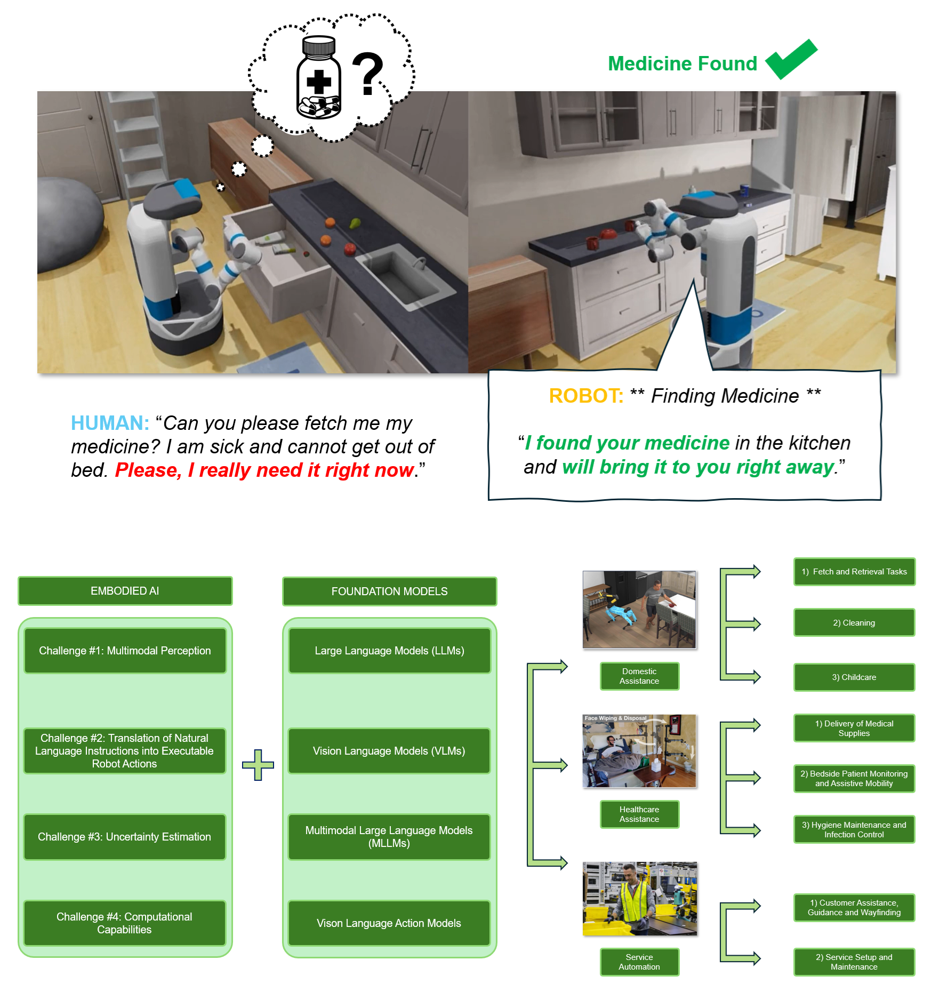
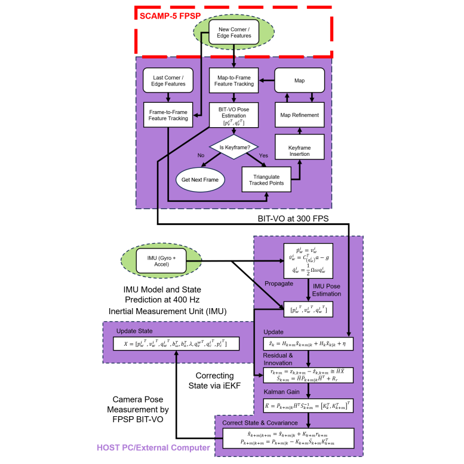

|
Matthew Lisondra
I am currently a Researcher of Robotics at the University of Toronto Robotics Institute.
My research focuses on Robot Perception, Robot Learning, Computer Vision, Simultaneous Localization and Mapping (SLAM), Autonomous/Intelligent Systems Algorithms, High Framerate Processing Low-Power Unconventional Sensing, 3D Scene Representations and Embodied AI.
Research Affiliations
I am affiliated with the following research labs:
Email /
Curriculum Vitae (CV) /
LinkedIn /
Google Scholar
|

|
|
Education
UofT Robotics Institute, University of Toronto PhD, Doctor of Philosophy (Mechanical Engineering)
Robotics and Computer Vision Laboratory (RCVL) MASc, Master’s of Applied Science (Mechanical Engineering)
Physics, University of Toronto HBSc, Honours Bachelor of Science (Physics and Computer Science)
- Focus: Robotic Mechanics, Probability, TS-Analysis, Computational Physics
- Research: Time Series Analysis on Global Temperature, Sea Level Pressure
- Research: Helium-Neon Laser Analysis (Reviewed by Dr. A. Vutha)
- Research: Percolation via Random Processes Monte Carlo, Porous Rock
- Collaborated with: Dr. D. Jones of APCM Group
|
|
Selected Publications/Works
|
|

|
[1] Embodied AI with Foundation Models for Mobile Service Robots: A Systematic Review
Matthew Lisondra1,
Beno Benhabib1,
Goldie Nejat1
(1University of Toronto)
IEEE Robotics and Automation Magazine (RA-M), 2025
Special Issue on Embodied AI: Bridging Robotics and Artificial Intelligence Toward Real-World Applications
(In Review)
Presents the first systematic review of foundation models integrated into mobile service robotics
Identifies and categorizes the core challenges in embodied AI: multimodal sensor fusion, real-time decision-making, task generalization, and effective human-robot interaction
Analyzes how foundation models (LLMs, VLMs, MLLMs, VLAs) enable real-time sensor fusion, language-conditioned control, and adaptive task execution
Examines real-world deployments across domestic assistance, healthcare, and service automation domains
Demonstrates the transformative role of foundation models in enabling scalable, adaptable, and semantically-grounded robot behavior
Proposes future research directions emphasizing predictive scaling laws, autonomous long-term adaptation, and cross-embodiment generalization
Highlights the need for robust and efficient deployment of foundation models in human-centric robotic systems
|
|
|
[2] TCB-VIO: Tightly-Coupled Focal-Plane Binary-Enhanced Visual Inertial Odometry
Matthew Lisondra*1,
Junseo Kim*2,
Glenn Takashi Shimoda3,
Sajad Saeedi4
(1University of Toronto, 2TU Delft, 3TMU, 4University College London)
IEEE Robotics and Automation Letters (RA-L), 2025
(In Review)
Presents TCB-VIO: the first tightly coupled 6-DoF visual-inertial odometry algorithm designed for Focal-Plane Sensor-Processor Arrays (FPSPs)
Achieves high-speed visual-inertial fusion at 250 FPS (vision) and 400 Hz (IMU) using a Multi-State Constraint Kalman Filter (MSCKF)
Introduces a novel binary-enhanced Kanade-Lucas-Tomasi (KLT) tracker tailored for on-sensor binary edge images and feature maps
Leverages FPSP on-sensor processing to drastically reduce data transfer latency and power consumption for mobile robotics
Maintains accurate and robust tracking even under aggressive motion where state-of-the-art methods (VINS-Mono, ORB-SLAM3, ROVIO) fail
Demonstrates superior tracking smoothness and feature longevity using long binary feature tracks in real-world environments
Validated on the SCAMP-5 FPSP, highlighting robustness despite analog computing constraints such as limited per-pixel memory and noise
Extends and adapts the OpenVINS tightly coupled framework to work with binary feature-based, low-power embedded vision sensors
|
|
|
[3] High-frequency Focused Ultrasound for Microplastics Identification and Size Estimation
Navid Zarrabi2,
Eric Stohm3,
Hadi Rezvani4,
Matthew Lisondra1,
Nariman Yousefi5,
Sajad Saeedi1,
Michael Kolios6
(1University of Toronto)
2025
(In Review)
Proposes a novel ultrasound-based method for detecting, identifying, and sizing microplastic particles using high-frequency acoustic signals
Introduces a peak extraction technique to isolate key features from backscattered ultrasound signals for improved material classification
Develops a 1-D Convolutional Neural Network (CNN) achieving 99.63% accuracy for classifying microplastic materials (PE, PMMA, steel, glass)
Implements a two-hidden-layer material-specific Multilayer Perceptron (MLP) that estimates particle size with 99.97% accuracy
Demonstrates an integrated machine learning pipeline combining material identification and size estimation from ultrasound signals
Offers a low-cost, rapid, and automated alternative to traditional microplastic detection techniques (e.g., Raman, FTIR, microscopy)
Validates the approach on a custom dataset of microsphere backscatter signals, demonstrating potential for in-situ environmental monitoring
Advances the field of acoustic signal processing by showcasing the potential of ultrasound and AI for environmental pollutant characterization
|
|
|
[4] PovNet+: A Deep Learning Architecture for Socially Assistive Robots to Learn and Assist with Multiple Activities of Daily Living
Matthew Lisondra*1,
Souren Pashangpour*1,
Fraser Robinson2
Goldie Nejat1
(1University of Toronto, 2Resolve Surgical)
IEEE Robotics and Automation Letters (RA-L), 2025
(In Review)
Presents the first multimodal deep learning architecture for autonomous multi-activity recognition in socially assistive robots (SARs)
Introduces a novel ADL and motion embedding space to distinguish between known ADLs, unseen ADLs, and atypical ADL performances
Proposes a new user state estimation method that applies similarity functions to identify novel or atypical ADLs in real-time
Enables proactive human-robot interaction (HRI) by allowing SARs to autonomously initiate assistive behaviors based on activity context
Addresses limitations of prior ADL recognition systems which misclassified non-ADL movements and lacked online generalization
Demonstrates higher ADL classification accuracy compared to state-of-the-art human activity recognition models
Validates the system through real-world HRI experiments with the socially assistive robot Leia in cluttered living environments
Supports diverse users and environments by recognizing a wider range of ADLs and adapting to personalized or atypical behaviors
|

|
[5] Inverse k-visibility for RSSI-based Indoor Geometric Mapping (In Review)
Matthew Lisondra*1,
Junseo Kim*2,
Yeganeh Bahoo3,
Sajad Saeedi3
(1University of Toronto, 2TU Delft, 3TMU)
IEEE Sensors Journal (ISJ), 2024
Special Issue on Machine Learning for Radio Frequency Sensing
(In Review)
bibtex
/
Project Webpage
/
PDF
Presents a novel technique capable of generating geometric maps from WiFi signals
A novel algorithm that is capable of generating geometric maps using WiFi signals received from multiple routers
Benchmarking the WiFi-generated maps with Lidar-generated maps by comparing the area,
number of data points, RSSI prediction True/False setting, RSSI accuracy percentage, IOU and MSE scores
Evaluation on real-world collected from indoor spaces
|

|
[6] Visual Inertial Odometry using Focal Plane Binary Features (BIT-VIO)
Matthew Lisondra*1,
Junseo Kim*2,
Riku Murai3,
Koroush Zareinia4,
Sajad Saeedi4
(1University of Toronto, 2TU Delft, 3Imperial College London, 4TMU)
IEEE International Conference on Robotics and Automation (ICRA), 2024
bibtex
/
Project Webpage
/
PDF
/
Video
Designed the first 6-DOF Visual Inertial Odometry on FPSPs (BIT-VIO)
Efficient VIO operating and correcting by loosely-coupled sensor-fusion iEKF at 300 FPS
using predictions from IMU measurements obtained at 400 Hz
Uncertainty propagation for BIT-VO's pose as it is based on binary-edge-based descriptor extraction
Extensive real-world comparison against BIT-VO, with ground-truth obtained using a motion capture system
|
|

|
[7] Focal-Plane Sensor-Processor-Based Visual Inertial Odometry
Matthew Lisondra*1,
(1University of Toronto)
Thesis, 2024
bibtex
/
PDF
Studied the usability and advantages of FPSPs to leverage a more accurate state estimation framework
Designed an algorithm for VIO using Focal-Plane Binary Features
Implemented the FPSP vision- IMU-fused estimation algorithm on a mobile device for offline and online real-world testing
Evaluate the performance, benchmarking against FPSP vision-alone and ground-truth data
Extensive study on the algorithmic execution timing/frame, accuracy, memory usage
and power consumption of the visual front-end processing performance on the FPSP
|
Organizations
- Reviewer (Journal) for ISJ 2025, IEEE Sensors Journal (ISJ) 2025
- Reviewer (Journal) for RA-L 2024, IEEE Robotics and Automation Letters (RA-L) 2024
- Reviewer (Conference) for IROS 2024, IEEE/RSJ International Conference on Intelligent Robots and Systems (IROS)
- Reviewer (Conference) for ICRA 2024, International Conference on Robotics and Automation (ICRA) 2024
- Reviewer (Conference) for IEEE CCECE 2023, 2023 Canadian Conference On Electrical and Computer Engineering
- Reviewer (Conference) for IROS 2023, IEEE/RSJ International Conference on Intelligent Robots and Systems (IROS)
|
|
Teaching
I am affiliated with several teaching institutions, teaching Physics (Advanced) and Computer Science. Select students I have taught:
- H. Li
- L. Liang
- N. Feng
- R. Sun* (Multiple Scholarship Offers in Australia, England)
- W. Zheng
- A. Zhang
- A Huang* (Now at Berkeley Music School)
- B. Zheng
- B. Luo* (Full Scholarship Physics, University College London)
- B. Yang* (Now at King's College London)
- C. Yang* (Now at Durham University)
- F. Chen
- G. Ye* (Now at University of Hong Kong)
- J. Wu
- K. Sheng, Chuwen (Multiple University Offers)
- L. Lin
- N. Zhao* (Multiple University Offers in Business)
- N. Tian
- A. Pu
- D. Qiu
- M. Wang
- R. Zhang
- C. Zou
- Y. Caelon
- S. Yumo
- A. Ma
- A. Xu
- K. Chen
- F. Xin
- A. Yi Lan
- C. Yi
- F. Chen
- L. Li
- M. Di
- R. Zhang
- S. Fan
Thesis Mentoring/Guidance:
Junseo Kim (Now at TUDelft Robotics)
Autonomous Truck Navigation with Trailer Integration via Natural Language Processing (NLP)
More information as well as students taught can be found on my Curriculum Vitae (CV).
|
|